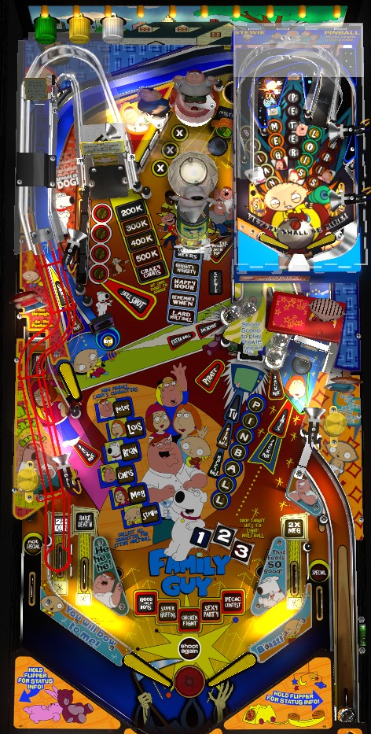

Family Guy and Shrek use the same playfield and rules, but with different artwork, callouts, and names for features. This guide uses names from both versions of the game, listing Family Guy first in all cases since it was released first.
Note that some content on Family Guy may be unsettling or not suitable for work/children.
Shoot the right spinner to light TV/Swamp modes at the scoop. It's not too hard to play all 5 modes and time them out to get to TV/Swamp Wizard mode, but the wizard mode isn't valuable unless you play out the 5 main modes. Play Fart/Baby Multiball by completing the drop targets in the upper left: 3 completions at first, increasing up to 6 as the multiball is played more times. Spell Pinball at the captive ball to qualify Stewie/Donkey Pinball on the upper playfield; spell all of the character names on the mini-playfield for multiball.
The below picture of Family Guy's playfield was taken from the VPX recreation by Ninuzzu et al.

The skill shot is a precise-power plunge that arcs across the playfield and hits the lowest drop target in the upper left 4-bank. A full plunge will usually hit the highest or second highest targets in this bank. A secret skill shot is available by plunging slightly softer to direct the ball to the upper left flipper, then using that upper flipper to shoot the ball up the Super Jackpot lane that goes underneath the mini-playfield. A regular skill shot scores 500,000 points, increasing by 250,000 each time. A secret skill shot scores 2x the current normal skill shot value (and still increases the normal skill shot value).
The right spinner starts each ball at a value of 1,000 points. Each spin of the spinner scores the current spinner value and then adds 50 to it, up to a maximum of 5,000 points per spin. Each spin also counts down the number of spins needed to light the TV/Swamp scoop, located just to the left of the spinner, for a TV/Swamp mode. The mode that will be started is flashing near the flippers, and bumpers rotate which mode is flashing; solidly lit modes have already been played, and modes cannot be replayed until all 5 modes and the ensuing mini-wizard mode have been played once each. Shooting the TV/Swamp scoop when a mode has not been qualified gives a random point total, usually between 50,000 and 100,000. The first mode takes 10 spins of the right spinner to light, with subsequent modes each taking 5 more spins to qualify than the previous. If a lit far left in lane was just made, thus qualifying 2x Lois/2x Gingy at the right spinner, shots to that spinner score double points, but they do not give double progress toward lighting the next mode.
All main modes except Chicken Fight/Wrestling Match are timed to 30 seconds. The 5 main modes are:
After all 5 TV/Swamp modes have been played, the 6th mode is simply called TV Wizard/Swamp Wizard mode. This is a single-ball mini-wizard mode. To begin, 1,000,000 points are scored, and your Swamp Wizard jackpot value is calculated as:
If you've played TV Wizard/Swamp Wizard multiple times, this calculation takes into account the total of all times each mode was played.
TV Wizard/Swamp Wizard is a repeatable hurry-up mode. The hurry-up value starts at your jackpot value and counts down to 250,000. Jackpots can be scored at the lower left lane, either orbit, the left ramp, either captive ball, or the Super Jackpot lane just above the Stewie/Donkey targets. Making a jackpot shot unlights it, scores the current hurry-up value, and increases the multiplier of the next lit Jackpot shot you make. Making the Super Jackpot shot scores double the current hurry-up value on top of whatever other multiplier is currently built up. Shooting the scoop when lit counts as a jackpot shot with the multiplier, but then resets the hurry-up, resets the multiplier to 1x, and relights all jackpot shots. At first, it takes just 1 hit to light the scoop for a reset, but each time you succeed in resetting, it takes one more jackpot shot for the next scoop relight. This mode continues until the ball drains or until 3 seconds pass with the hurry-up at its minimum value of 250,000 without making the lit scoop.
TV Wizard/Swamp Wizard scoring can be somewhat disappointing unless you played the main modes very well. However, it's important to take this mini-wizard mode seriously no matter how you get it, because earning a total of 25,000,000 points in TV/Swamp Wizard is one of the requirements for reaching Sperm Attack/Far Far Away true wizard mode. If you do not earn the 25,000,000 your first time through, you must replay all 5 TV/Swamp modes to get back to the mini-wizard and add more to your total, which can be quite a pain. The number of spins needed to light each mode appears to continue to go up on the second lap through the modes.
At almost any time, shooting either captive ball awards a letter in the word Pinball (the same word is spelled in both versions of the game). Spelling Pinball qualifies Stewie/Donkey Pinball at the mini-playfield, which is accessed by shooting the TV/Swamp scoop. By default, Stewie/Donkey Pinball has a ball save timer of 15 seconds; shots to the Stewie/Donkey targets in single-ball, non-mode play before actually starting Stewie/Donkey Pinball add 1 second to the clock (maximum 30) and score 100,000 points, +10,000 for each subsequent hit (max 250,000). Shoot the scoop with Pinball spelled to move up to the mini-playfield.
The mini-playfield includes two mini-flippers and a mini-ball. There are 5 shots to make around this playfield. The goal is to spell character names by repeatedly making these 5 shots. The left orbit has 5 letters; the near standup target has 3; the back standup target has 5; the right ramp has 4; and the right orbit has 5. You may get 2 letters per shot to each location if you have not yet played Stewie/Donkey Multiball in the current game. The first letter at a shot scores 50,000 points, and each subsequent letter is worth 50,000 more than the last. Completing a shot scores 500,000 points and increases the multiplier for all mini-playfield scoring up to a maximum of 3x. When Stewie/Donkey Pinball begins, you have unlimited ball save for the length of the timer that was built up at the Stewie/Donkey targets before entering the upper playfield. When the timer runs out, you can keep the mini-ball in play, but if you drain, the feature will end and you need to spell Pinball again to continue. Progress on collected letters at the mini-playfield does carry over across multiple plays of Stewie/Donkey Pinball. Completing all 5 characters at the mini-playfield will lock the flippers, allowing the mini-ball to drain, and start Stewie/Donkey Multiball.
Stewie Multiball consists of playing with the mini-ball on the mini-playfield and 4 regular balls on the main playfield. Jackpots alternate between the 5 shots on the mini-playfield and the corresponding character shots on the main playfield (lower left lane, left orbit, Brian/Prince Charming toy, X-X-X back targets, and right orbit). At the start of Stewie/Donkey Multiball, there is 15 seconds of unlimited ball save on both playfields. Once the ball save ends, if you drain the mini-playfield ball, you have to hit the Stewie/Donkey targets to have the mini-playfield ball relaunched with 5 more seconds of ball save; this does not re-up the main playfield ball save. The first jackpot collected for a character scores 500,000 points, and further jackpots for that character (which alternate between the two playfields) each score 100,000 more than the last. Collecting 2 jackpots for each character lights the Super Jackpot lane that goes under the mini-playfield for 2,000,000 points, increasing by 1,000,000 for each Super Jackpot already collected. You can continue to go back and forth between the playfields for regular character jackpots, but don't ignore the Super Jackpot entirely, because collecting a Stewie/Donkey Super Jackpot is one of the requirements for Sperm Attack/Far Far Away true wizard mode. Also, for a few seconds after scoring a Super Jackpot, the mystery saucer in the very back of the main playfield will score a secret Triple Super Jackpot. Hitting the captive balls enough to spell Pinball during Stewie/Donkey Multiball will add a ball to the main playfield if there are not already 4 in play.
Each shot to the Brian/Prince Charming toy in front of the pop bumpers awards one Beer Can/Villain. There are 5 modes listed in front of this toy; the flashing one will be the next one to start, and is rotated by pop bumper hits. It takes 5 hits to the toy to start the first mode, with each subsequent mode needing 1 more hit than the previous. This set of 5 modes includes:
Playing all 5 Beer Can/Villain modes resets them and allows them to be played again. Completing a set of these 5 modes, which requires a minimum of 35 shots to the Brian/Prince Charming toy, is one of the requirements for reaching Sperm Attack/Far Far Away wizard mode.
Repeatedly complete the drop targets in the upper left to start multiball. In multiball, you'll receive a jackpot after reaching various predetermined numbers of switches hit anywhere in the game. The jackpot is equal to 20,000 points times the number of switches you needed to reach that jackpot. The number of balls in each Fart/Baby Multiball and the number of switches needed to reach each jackpot is dependent on how many times Fart/Baby Multiball has been played.
Collecting 15 Fart Multiball jackpots over the course of the game is one of the requirements for reaching Sperm Attack/Far Far Away wizard mode. Fart/Baby Multiball can be started at almost any time, including while a TV/Swamp or Beer Can/Villain mode is running; you can start Beer Can/Villain modes during Fart/Baby Multiball, but not TV/Swamp modes.
The left orbit is not a true orbit, but ends in a standup target in the back corner of the game and comes down the way it came toward the upper left flipper. Shots to the left orbit's standup target score Chris/Puss in Boots awards. The first shot to this orbit on each ball scores 100,000 points, increasing by 10,000 each time; it will also lower the Monkey/Castle Guard hanging target in front of the left ramp and light the Super Jackpot lane for a Monkey/Puss in Boots Jackpot for a few seconds.
Each shot to the left orbit qualifies the next award shown in front of the left ramp. Qualified awards are flashing, while soldily lit awards have already been earned. Hitting the hanging target in front of the left ramp instantly collects all flashing awards. The awards are 200,000 - 300,000 - 400,000 - 500,000 - Crazy Chris/Repay Your Debts. Crazy Chris/Repay Your Debts is a 20-second mode where all major shots in the game score 400,000 points. Making a total of 10 shots during Crazy Chris/Repay Your Debts over the course of the game (across multiple plays of the mode if needed) is one of the requirements for Sperm Attack/Far Far Away true wizard mode.
The Super Jackpot lane goes just under the mini-playfield and is entered by shooting the ball with the upper left flipper just above the Stewie/Donkey left-facing targets. If this shot is not lit, it awards an increasing value that starts at 250,000 points at the beginning of each ball and goes up by 25,000 with each subsequent hit, up to a maximum of 500,000. If this shot is lit because the left orbit standup target was just hit, it awards a Monkey/Puss in Boots Jackpot, which scores 500,000 points at the start of each ball and goes up by 50,000 per shot, to a maximum of 1,000,000. Collecting 5 Monkey/Puss in Boots Jackpots over the course of the game is one of the requirements for Sperm Attack/Far Far Away true wizard mode (on Shrek, this type of jackpots is referred to as "CG JPs" aka Castle Guard Jackpots, perhaps due to an oversight).
Unusually for a modern game, Family Guy/Shrek has a center post that completely blocks the center flipper gap. To raise this post for about 5 seconds, shoot the Death/Lie drop target, located between the left orbit and the Fart/Baby drop targets. To re-raise the Death/Lie target if it is down, roll through the near left in lane. If the machine is set up as intended, a ball resting against the center post and the left flipper can be shot directly into the right spinner orbit, and a ball resting against the center post and right flipper can be shot directly into the left orbit. Warning bells can be heard to indicate that the center post will be lowering soon.
This mystery award is lit at the small standup target located just left of the TV/Swamp scoop, and is relit by shooting the Meg/Fiona lower left lane. It will usually give something relevant to whatever is currently happening on the table. Possible awards include:
This list may not be exhaustive.
The back saucer is lit for a Mystery award at the start of each ball, or after making a full shot to the left ramp. This is a surprisingly precise shot and usually gives slightly better awards than the Pirate/Fairy Godmother mystery. Some awards include:
This list also may not be exhaustive.
Indicated by the TV/Swamp scoop simply being lit for Multiball, Sperm Attack/Far Far Away wizard mode is qualified when the following 6 goals have been reached:
The true wizard mode starts with 18 seconds of time on the mini-playfield with unlimited ball save. The jackpot value starts at 1,000,000 points, and increases based on shots hit on the mini-playfield: 50,000 for each standup target, 75,000 for each orbit, and 100,000 for the ramp. When the mini-playfield timer ends, 4-ball multiball with a generous ball saver begins on the main playfield. Any major shot scores a Jackpot, except for the TV/Swamp scoop.
If you get down to 2 balls in play, try to relock them. first at the Clam/Merlin saucer in the back of the game, then at the TV/Swamp scoop within 10 seconds. Each relock scores 2,000,000 points, and relocking both- in that order, and within 10 seconds of each other- restarts the build phase with another 18 seconds at the mini-playfield (increasing the jackpot value even further), after which time play is transferred back to the main playfield with a 3rd ball added to play. This process can be repeated for as long as 2 or more balls are in play. The entire wizard mode ends when single ball play resumes, resetting the progress toward all 6 major goals.
Family Guy/Shrek has a conventional in/out lane setup, but with 2 in lanes on the left instead of 1. Slingshots alternate whether the far left in lane or the right in lane is lit; when lit, the far left in lane qualifies 2x Lois/2x Gingy, and the right in lane qualifies 2x Meg/2x Fiona, which doubles the value of the right orbit or lower left lane respectively if hit within a few seconds. The near left in lane is lit when the Death/Lie drop target is down, and resets the Death/Lie drop target when made. The left out lane can be lit for Not Special/Extra Ball (though I'm not sure how, presumably as a consolation award or from a Mystery) and the right out lane can be lit for Special (definitely from Drunken Clam/Merlin mystery). There is a center post between the flippers that completely blocks the center drain (though it is possible to drain under a raised flipper with the post raised), which is completely separate from the standard ball save, and is raised by shooting the Death/Lie drop target.
End of ball bonus is calculated as the bonus multiplier times the sum of the following events that happened that ball:
Bonus multiplier is advanced by the Drunken Clam/Merlin mystery or by completing the X-X-X targets, up to a maximum of 5x. Bonus multiplier is only carried from ball to ball if you earn a Hold Bonus X mystery award. The entire bonus including multiplier can also be collected mid-ball as a Drunken Clam/Merlin mystery award. Bonus is often not super meaningful for game scoring.
| If you need... | Try... |
| 500,000 points | ...starting any TV/Swamp mode. |
| 2,000,000 points | ...playing a TV/Swamp mode to completion, starting Crazy Chris, or making a couple ramp shots. |
| 5,000,000 points | ...playing Stewie/Donkey Pinball or Fart/Baby Multiball. |
| 10,000,000 points | ...completing Stewie/Donkey Pinball and playing the ensuing multiball, or quickly timing out TV/Swamp modes to get to TV/Swamp Wizard at any value. |
| 20,000,000 points | ...focusing entirely on TV/Swamp modes to get to a high-value TV/Swamp Wizard, or continuing to play Stewie/Donkey Pinball and Multiball if it is easy to relight. |
| 50,000,000 points or more | ...continuing a focus on TV/Swamp modes or Stewie/Donkey Multiball; if you already have a good score and still need more, you may be close to Sperm Attack/Far Far Away, so try to pick off those remaining goals if you're close. Shots to the Brian/Prince Charming toy can be earned during multiball, which eliminates the danger of such a straight-on center shot. |